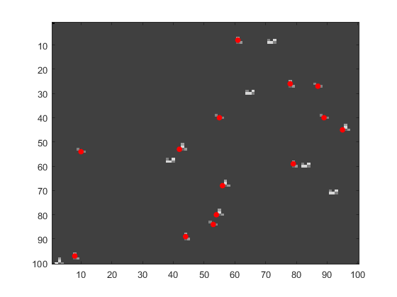

Contents
test nonmaxsup2d
rand('twister', 0);
img = ones(100)*0.3; l = floor(rand([1,20])*9800)+101; img(1,1)=0;
img(l)=1; img(l(1:2:end)+1)=0.5; img(l(1:2:end)-1)=0.75; img(l(2:2:end)-101)=0.6; img(l(2:4:end)+99)=1;
img(l(1:2:end)+101)=0.7; img(l(1:4:end)-99)=1.2; img(l(2:2:end)+100)=0.6; img(l(2:4:end)-100)=1;
nms = nonmaxsup2d(img, 0.05); [y x] = find(nms);
figure; imagesc(img); colormap gray;
line(x',y', 'color','r', 'linestyle','none', 'marker', '.', 'markersize', 20);
fprintf(1,'(%d,%d) ', [x';y']);
(8,97) (10,54) (42,53) (44,89) (53,84) (54,80) (55,40) (56,68) (61,8) (78,26) (79,59) (87,27) (89,40) (95,45)

testovaci obrazek pro detektory
img = repmat(sin((1:1024)/10),1024,1);
tform = maketform('projective',[0 0.49 0.59 1; 0 1 1 0]', [0 0 1 1; 0 1 1 0]');
img = imtransform((img + img')/4+.5, tform, 'bicubic', 'udata', [0 1], 'vdata', [0 1], ...
'xdata', [0 1], 'ydata', [0 .65], 'size', [256 256], 'fill', 0);
[h w]=size(img);
p.color = 'r';
p.linewidth=1.5;
detekce hessian na meritku 2
sigma = 2; response=hessian_response(img, sigma);
nms = nonmaxsup2d(response, 0.0001); [y x] = find(nms); x = x'-1; y = y'-1;
cutoff = 2.5;
junk = x<cutoff*sigma | x>w-cutoff*sigma | y<cutoff*sigma | y>h-cutoff*sigma; x(junk)=[]; y(junk)=[];
figure; imagesc(img, [-.5 1]); colormap gray; axis ij; pts = [x;y]; pts(3,:)=sigma;
showpts(pts, p, 1.0); title('Hessian detektor, sigma=2');
Undefined function 'hessian_response' for input arguments of type 'double'.
Error in test (line 25)
sigma = 2; response=hessian_response(img, sigma);
detekce hessian na meritku 8
sigma = 8; response=hessian_response(img, sigma);
nms = nonmaxsup2d(response, 0.000001); [y x] = find(nms); x = x'-1; y = y'-1;
junk = x<cutoff*sigma | x>w-cutoff*sigma | y<cutoff*sigma | y>h-cutoff*sigma; x(junk)=[]; y(junk)=[];
figure; imagesc(img, [-.5 1]); colormap gray; axis ij; pts = [x;y]; pts(3,:)=sigma;
showpts(pts, p, 1.0); title('Hessian detektor, sigma=8');
detekce harris na meritku 2
sigma = 2; sigmai=sigma*1.6; response=harris_response(img, sigma, sigmai);
nms = nonmaxsup2d(response, 0.0001^2); [y x] = find(nms); x = x'-1; y = y'-1;
junk = x<cutoff*sigmai | x>w-cutoff*sigmai | y<cutoff*sigmai | y>h-cutoff*sigmai; x(junk)=[]; y(junk)=[];
figure; imagesc(img, [-.5 1]); colormap gray; axis ij; pts = [x;y]; pts(3,:)=sigma;
showpts(pts, p, 1.0); title('Harris detektor, sigma_d=2, sigma_i=3.2');
detekce harris na meritku 4
sigma = 4; sigmai=sigma*1.6; response=harris_response(img, sigma, sigmai);
nms = nonmaxsup2d(response, 0.0001^2); [y x] = find(nms); x = x'-1; y = y'-1;
junk = x<cutoff*sigmai | x>w-cutoff*sigmai | y<cutoff*sigmai | y>h-cutoff*sigmai; x(junk)=[]; y(junk)=[];
figure; imagesc(img, [-.5 1]); colormap gray; axis ij; pts = [x;y]; pts(3,:)=sigma;
showpts(pts, p, 1.0); title('Harris detektor, sigma_d=4, sigma_i=6.4');
multiscale hessian maxima, detekce blobu nezavisle na meritku maly prah, aby jsme se zbavili sumu
threshold=0.003;
tic
[hes sigma]=sshessian_response(img);
toc
nms = nonmaxsup3d(hes, threshold);
[y x u] = ind2sub(size(nms), find(nms)); x = x'-1; y = y'-1; s = sigma(u); s=s(:)';
cutoff = 2.5;
junk = x<cutoff*s | x>w-cutoff*s | y<cutoff*s | y>h-cutoff*s; x(junk)=[]; y(junk)=[]; s(junk)=[];
figure; imagesc(img, [-.5 1]); colormap gray; axis ij;
showpts([x;y;s],p,1.0); title('Multiscale maxima Hessian detektor');
kontrola funkcnosti normalizace derivaci
for i=1:10
c = ceil(3*sigma(i));
fprintf(1, 'sigma: %9f, level max: %9.5g, min: %9.5g\n', sigma(i), ...
max(max(hes(c:end-c,c:end-c,i))), ...
min(min(hes(c:end-c,c:end-c,i))));
end;
multiscale hessian maxima a minima, detekce blobu a sedlovych bodu
nms = nonmaxsup3d(hes.^2, threshold.^2);
[y1 x1 u1] = ind2sub(size(nms), find(nms)); x1 = x1'-1; y1 = y1'-1; s1 = sigma(u1); s1=s1(:)';
junk = x1<cutoff*s1 | x1>w-cutoff*s1 | y1<cutoff*s1 | y1>h-cutoff*s1; x1(junk)=[]; y1(junk)=[]; s1(junk)=[];
figure; imagesc(img, [-.5 1]); colormap gray; axis ij;
showpts([x1;y1;s1],p,1.0); title('Multiscale maxima and minima Hessian detektor');
p=[]; p.color = 'y'; p.marker = '.'; p.markersize = 20;
harris detektor
img = im2double(imread('cameraman.tif')); [h w]=size(img);
[x y]=harris(img, 1, 1.5, 0.03^4); sigma = 1.5;
junk = x<cutoff*sigma | x>w-cutoff*sigma | y<cutoff*sigma | y>h-cutoff*sigma; x(junk)=[]; y(junk)=[];
figure; imagesc(img); colormap gray; axis image; showpts([x;y],p); title('Harris detektor, sigma_d 1, sigma_i 1.5');
hessian detektor
img = im2double(imread('cameraman.tif'));
[x y]=hessian(img, 1, 0.01);
junk = x<cutoff*sigma | x>w-cutoff*sigma | y<cutoff*sigma | y>h-cutoff*sigma; x(junk)=[]; y(junk)=[];
figure; imagesc(img); colormap gray; axis image; showpts([x;y],p); title('Hessian detektor, sigma 1');
p=[]; p.linewidth=2; p.color = 'r';
multiscale hessian detektor
img = im2double(rgb2gray(imread('sunflowers.png'))); [h w]=size(img);
tic
[x y s]=sshessian(img, 0.02);
toc
junk = x<cutoff*s | x>w-cutoff*s | y<cutoff*s | y>h-cutoff*s; x(junk)=[]; y(junk)=[]; s(junk)=[];
figure; imagesc(img); colormap gray; axis image; showpts([x;y;s],p); title('Multiscale max. Hessian detektor');
timestamp
fprintf(1,'Finished at %s', datestr(now));